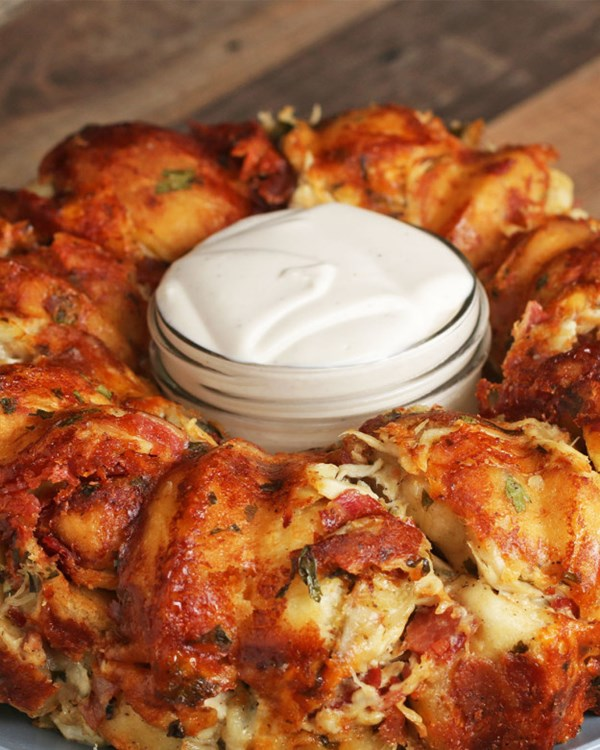

Garlic Knot Chicken Alfredo

Description
Originally as you might see from the picture this recipe was made to be a ring.
I chose not to do it that way because there isn't a bundt pan in my kitchen
currently. The first time making this, I followed it strictly how tasty showed
me but just added my own seasonings and personally found that it could be better.
This recipe also uses store-bought alfredo but feel free to make your own!
Ingredients
- Two packs pizza dough
- Two cups chicken, cooked and shredded
- One cup bacon, cooked and chopped
- Two cups shredded mozzarella cheese
- One cup grated parm cheese
- One whole jar of alfredo sauce
Steps
- Preheat the oven to 375F
- Cook bacon, cut up and set aside
- Cook chicken and season, shred and set aside
- In a large bowl, combine chicken, bacon, mozzarella, parmesan,
seasonings and at least one cup alfredo sauce; MIX WELL
- Scoop mixture evenly into a greased 9-inch cake pan
- Roll pizza dough into balls, with butter and seasonings
- Drop balls of pizza dough on top of mixture in pan
- Bake for 45-55 minutes, until top is golden